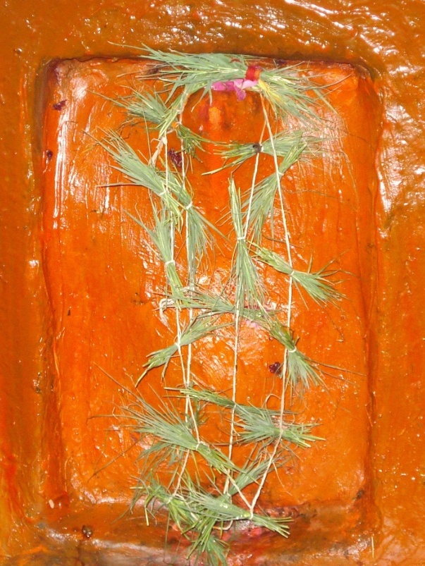

<?xml version="1.0" encoding="UTF-8"?><rss version="2.0"
	xmlns:content="http://purl.org/rss/1.0/modules/content/"
	xmlns:wfw="http://wellformedweb.org/CommentAPI/"
	xmlns:dc="http://purl.org/dc/elements/1.1/"
	xmlns:atom="http://www.w3.org/2005/Atom"
	xmlns:sy="http://purl.org/rss/1.0/modules/syndication/"
	xmlns:slash="http://purl.org/rss/1.0/modules/slash/"
	>

<channel>
	<title>VIKATA DWIJA VINAYAK &#8211; Varanasi Temples</title>
	<atom:link href="index.html" rel="self" type="application/rss+xml" />
	<link>../../../../index.html</link>
	<description>Temples of Varanasi as referred to in Kashi Khand</description>
	<lastBuildDate>Thu, 19 Jun 2025 05:16:46 +0000</lastBuildDate>
	<language>en-US</language>
	<sy:updatePeriod>hourly</sy:updatePeriod>
	<sy:updateFrequency>1</sy:updateFrequency>
	<generator>https://wordpress.org/?v=4.6.29</generator>
	<item>
		<title>VIKATA DWIJA VINAYAK</title>
		<link>../../../../vinayak-temples/vikata-dwija-vinayak/vikata-dwija-vinayak-2/index.html</link>
		<pubDate>Fri, 07 May 2010 02:05:42 +0000</pubDate>
		<dc:creator><![CDATA[ramana]]></dc:creator>
				<category><![CDATA[VIKATA DWIJA VINAYAK]]></category>
		<category><![CDATA[devotees worship hanuman in siddhivinayak temple]]></category>
		<category><![CDATA[dhoomavati]]></category>
		<category><![CDATA[vikata]]></category>
		<category><![CDATA[Vinayak Temples]]></category>

		<guid isPermaLink="false">../../../../p=72.html</guid>
		<description><![CDATA[(VIKATA DWIJA VINAYAK) Vikata Dwija Vinayak is located at Dhoop Chandi locality in Dhoomavati Devi temple. The idol can be seen behind Dhoomavati Devi, next to Hanuman idol. Worshipping this Vinayak will give the highest position in life to the devotee. TYPES OF POOJA The place of worship is open from 06.00 a.m. to 01.30 [&#8230;]]]></description>
				<content:encoded><![CDATA[<p></p>
<p style="text-align: center;"><strong>(VIKATA DWIJA VINAYAK)</strong></p>
<p>Vikata Dwija Vinayak is located at Dhoop Chandi locality in Dhoomavati Devi temple. The idol can be seen behind Dhoomavati Devi, next to Hanuman idol. Worshipping this Vinayak will give the highest position in life to the devotee.</p>
<h3>TYPES OF POOJA</h3>
<p>The place of worship is open from 06.00 a.m. to 01.30 p.m. and from 05.00 p.m. to 11.00 p.m.  Aarties are performed in the morning and evening.</p>
]]></content:encoded>
			</item>
	</channel>
</rss>
